Все началось с поздравления с Днем рождения.
22.01.2021 Александр Дворжицкий написал в соцсетях:
Маме - 81.
Во-первых, очень здорово, что сегодня именинница активно принимает поздравления и отвечает на своих страничках в соц. сетях. И пусть так будет еще много-много лет!
Во-вторых, пользуясь случаем, рекомендую почитать истории на сайте dvorzhik.site (там большинство историй написано мамой, за что ей большущее спасибо)!
Ну а здесь я просто выложу 8 маминых фотографий из разных лет, из разных мест.
И попрошу и своих, и маминых друзей написать к этим фото комментарии, а если получится - короткие истории, связанные с мамой - это будет чудесным подарком детям и внучкам.
И я надеюсь, что не только нам!
А еще я добавлю одну песню в мамином исполнении .
Просто выложу и ничего объяснять не буду - невозможно некоторые вещи словами объяснить...
С днем рождения, мама!
А мама (Алла Ларина) честно прокомментировала опубликованные фото (и даже немного больше).
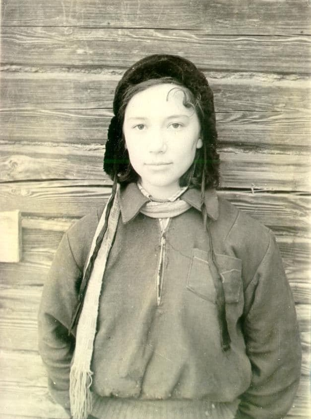
«Я смотрю на фотокарточку…»
У меня нет ни одной детской фотографии. Ничего удивительного: во время войны не до того было. Первые годы после нее – тоже!
И этой фотографии тоже не было бы, если бы не Эдик, поступивший в наш 8 класс и влюбившийся в меня. У него единственного из моего окружения был фотоаппарат, и благодаря этому у меня немало школьных фотографий. Здесь я после ежедневной лыжной прогулки.
1954 год, поселок Лёвиха, Свердловская область.
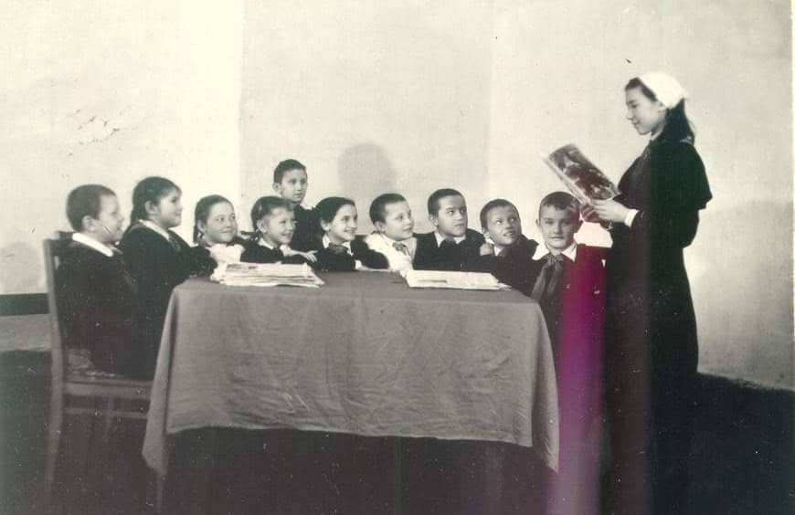
Это было начало. Начало моей педагогической деятельности. Мне было 15. Закончилась она в 75.
Начну с того, что в 7 классе в Свердловске меня не приняли в комсомол – я не входила в число отличников. На Лёвихе тоже не сразу приняли, а дали поручение – быть отрядной вожатой у третьеклассников.
И вот тут мне повезло. У этого класса была прекрасная учительница – Анна Родионовна, и мы с ней очень хорошо понимали друг друга. Организовали работу звеньев. Помню, как интересно «шагали» по «Ступенькам юного пионера», вышедших в то время и очень здорово нам помогавших. Вместе со своими ребятами я изучала, например, породы деревьев (я же выросла в степи, ель от сосны не отличала), птиц и многое другое. Эти два года с этими ребятами определили мою профессию.
После 10 класса я стала старшей пионервожатой в этой же школе и тоже проработала два года. И они тоже незабываемы!
Мне удалось направить работу школьного комсомола на моих пионеров. Мы организовали соревнование на лучший отряд, проводили конкурсы и разные игры (у меня дома на письменном столе рядом с книгами для подготовки в институт лежали брошюры по судейству футбола), ездили в Нижний Тагил на праздники, радовали односельчан шествиями с горнами и барабанами, ходили в походы и помогали совхозу, создав палаточный лагерь труда и отдыха.
В жизни бывает немало сюрпризов. Лет через тридцать школа отмечала юбилей, и выпускники, конечно, съехались. Когда ведущая зачитывала благодарности педагогического совета за разные годы, она просила вставать тех, кого упоминают в приказе. Встала и я, услышав свою фамилию. За соседним столиком заметила активное оживление. Это оказались мои бывшие третьеклассники, и они помнили меня! Такое не забывается!
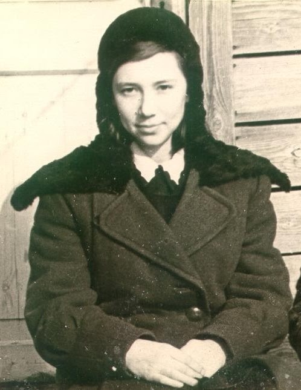
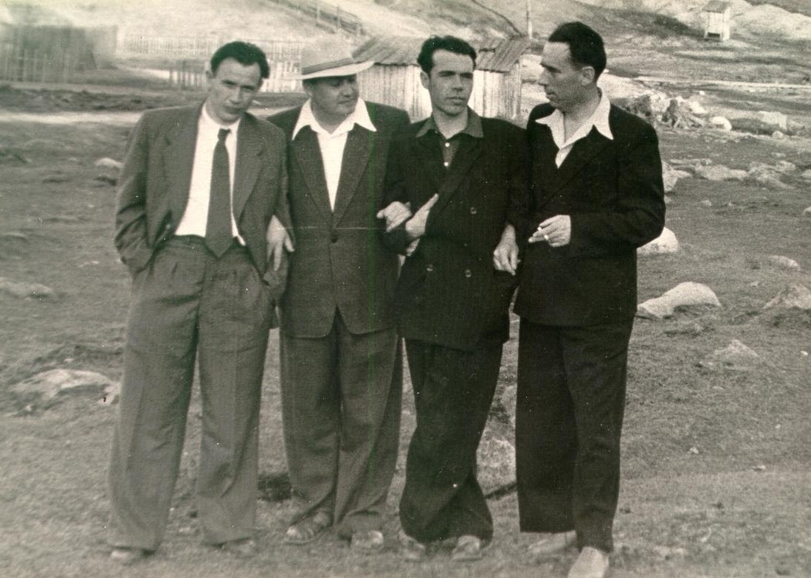
Я была папина дочка.
Мне не было десяти лет, когда мой звонкий голос вливался в мужской хор с мужскими песнями, в том числе и о любимом наркоме.
Я хорошо помню, как родители принимали гостей-начальников, приезжавших к начальнику геологоразведочной партии.
Мама накрывала в гостиной круглый стол традиционными своими блюдами: пельмени, пирожки, салаты - и уходила в спальню укладывать спать Вовку.
Мы были в детской чаще всего втроем: Артурка, папин младший брат, Эмма и я.
Я терпеливо ждала, когда гости насытятся (к слову: утром, пока родители спали, мы шли доедать то, что осталось), перейдут к песням, и выходила к ним, усаживаясь рядом с папой или даже у него на коленях.
Больше всего любили гимн артиллеристов, которым дан приказ. А еще были "Три танкиста", "Темная ночь", "Катюша". Чтобы не наврать, не буду вспоминать другие.
Со временем у папы появились и другие любимые песни: "Журавли" и "Эх, дороги" в исполнении Марка Бернеса.
А я любила все, что любил папа, потому и вырастила тебя на этих песнях.
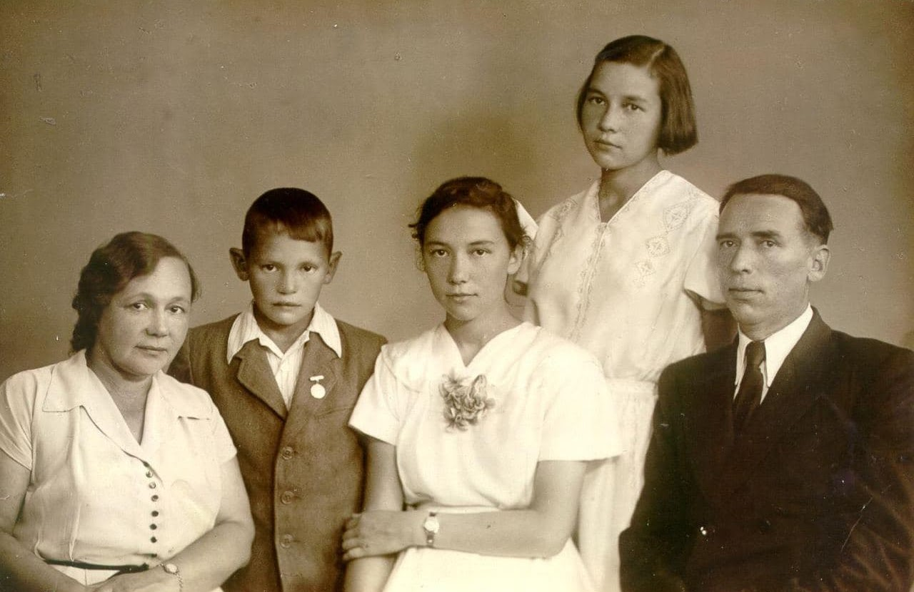
«… И в том строю есть промежуток малый,
Быть может, это место для меня…»
Эта песня – одна из самых папиных любимых.
1957 год. Я закончила школу, сестра – годом раньше. Мы обе в выпускных платьях. Жили мы в поселке геологов и шахтеров, и ради этой фотографии папа возил нас в Свердловск к профессиональному фотографу.
У нас была замечательная семья (о каждом я уже писала свои воспоминания на сайте dvorzhik.site ). Она была на виду у всех – семья начальника геологоразведочной партии, человека сильного и яркого. Его боялись и уважали, ценили и дорожили дружбой с ним, любили и за юмор, и за то, что всегда был душой компании.
В нашей семье удивительно сочетались строгость и радушие, требовательность и отсутствие контроля, категоричность и уважительное отношение к другому мнению, переживание за поступок и полное доверие.
Помню, на встречу Нового года родители уходили в гости, предварительно оставив нам еды на всю ночь. А когда в 5 утра возвращались и заглядывали в детскую, где праздновали мы, папа еще и пел с нами под баян одного из наших мальчишек.
Конечно, жизнь наша не была идиллией. Сколько тяжелых переживаний и даже несчастий происходило, но я никогда не слышала в нашей семье грубого слова, никогда не видела маминых слез.
Не припомню и воспитывающих нотаций или задушевных разговоров, но отдельные фразы, сказанные по какому-либо поводу, навсегда врезались в память, чтобы стать руководством к действию. До сих пор.
Каждый день я благодарю наш род, трансформируя внутри себя, в своем сердце, все негативные энергии, все негативные родовые сценарии в любовь и изобилие. И моя родовая энергия, которая протекает через меня, идет к моим детям уже исцеленная.
Я тот человек, на котором остановились негативные родовые сценарии. Я тот человек, с которого началась позитивная история нашего рода!
Да будет так!
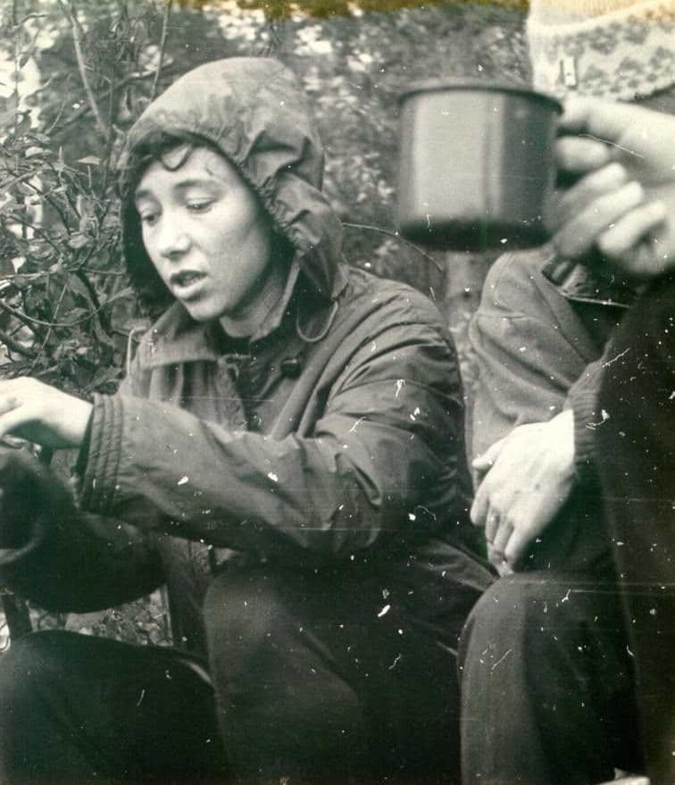
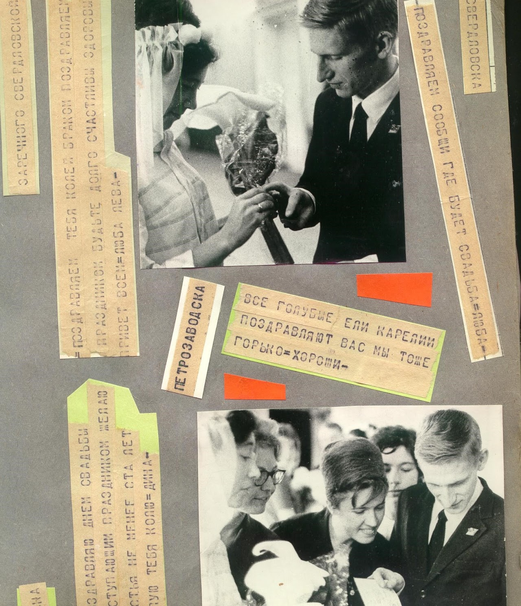
Это на Волге. 1968-69 учебный год. Костромской пединститут. Коля – студент, я – ассистент кафедры педагогики и психологии, куратор 1 курса, ведущая семинары по «Истории пионерского движения» и короткий курс «Методика комсомольской работы в школе».
Всего один год! А кажется – целая жизнь! Столько всего было! Об этом есть на сайте « Дворжики в интернете ».
На нашем курсе практически не было выпускников того года. Это были вожатые «Артека» и «Орленка», приехавшие из разных концов нашей страны получить диплом методиста комсомольской и пионерской работы.
Параллельно с началом занятий шла подготовка к нашей свадьбе.
Жизнь казалась прекрасной: нам было интересно учить и учиться, мы хорошо себя чувствовали и в студенческом, и в педагогическом коллективах, нам не было тесно в 6-метровой комнате, и мы ждали сына…
А потом все рухнуло. Миф о замечательном факультете развеялся, сериям скандалов и разборок на самом высоком уровне не было конца, и, дотянув до конца учебного года, Коля отправил меня в Пермь, а сам остался отправлять в Петрозаводск контейнер (пианино, книги, диван).
Вот такие воспоминания нахлынули при взгляде на эту фотографию.
А песню Ю.Визбора любили всегда...
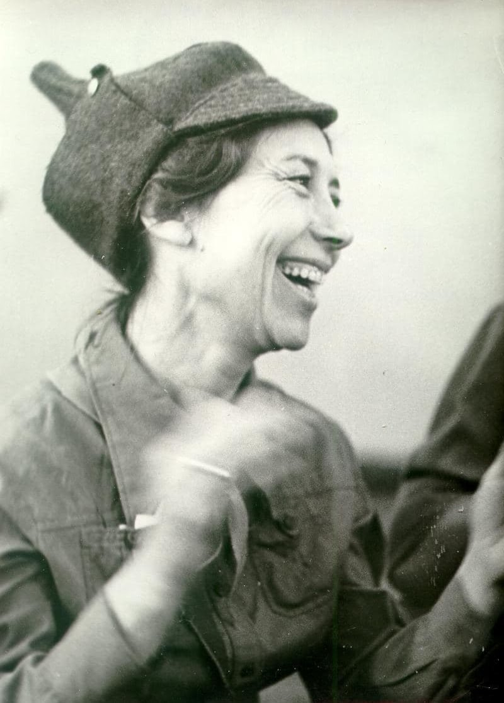
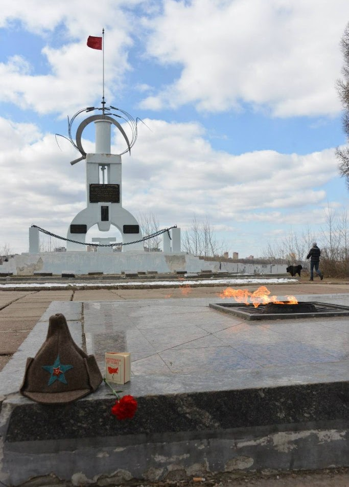
« До свидания, мама,
Ухожу к тем ребятам… »
Создавая в 1964 году Клуб старшеклассников в г. Перми, я, будучи секретарем Мотовилихинского РК ВЛКСМ по идеологии, думала только о том, как активизировать работу школьного комсомола. И у нас получилось!
Когда в 1967 году я переехала в Карелию, Клуб остался в надежных руках и продолжил свое существование более 30 лет. Впрочем, для меня он и сейчас живой – это мой тыл, это моя уверенность в том, что, если кому-то из нас нужна будет помощь, десятки друзей откликнутся по первому зову.
Из предисловия Марины Пищальниковой (Сорокиной) к «Книге о Клубе», вышедшей в 2015 году к 50-летнему юбилею КЮКа.
«Клуб Юных Коммунаров города Перми – явление уникальное в самом отчаянном смысле этого слова. Каждый, кому посчастливилось быть какое-то время в этой организации, стал либо умнее, либо интереснее как личность, способнее, оригинальнее, глубже, мудрее, либо просто счастливее. А чаще всего – всё это вместе.
Клуб ломал стереотипы, не признавал шаблонов, вкуснейшим образом варился в собственном соку и щедрейшим образом делился со всем белым светом, кого-то из окружающих людей он раздражал своей свободой, кого-то восхищал патриотизмом и лиричностью. Постичь его суть извне было невозможно, а изнутри анализировать суть не было необходимости.
Потому что понятие СЧАСТЬЕ без анализа выглядит более цельным. Это было потрясающе…»
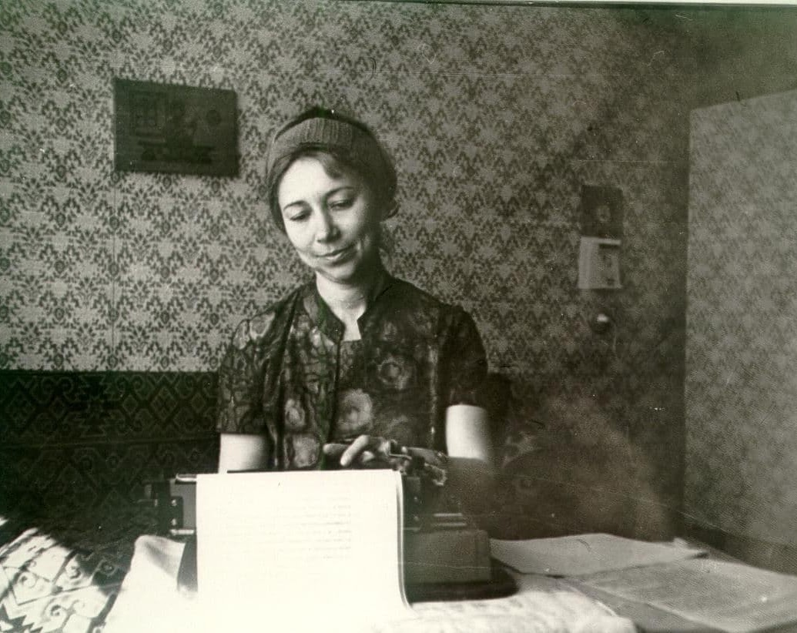
Эта очень скромная фотография переносит меня в Карелию, в середину 70-х, когда меня вызвали в ОК КПСС и предложили стать ответственным секретарем Карельского Общества любителей книги.
Я уже несколько месяцев была без работы, поскольку отказалась стать директором школы в Пяозеро (нашу железнодорожную школу в Петрозаводске закрыли), согласилась.
Собственно говоря, Общества как такового не было – его надо было создавать. Создавать без сотрудников, без помещения, без зарплаты, которая могла появиться только тогда, когда коллективные члены станут перечислять деньги.
И наша комната в коммунальной квартире стала еще и офисом. Телефон мне поставили, пишущая машинка у меня была, а командировки всегда любила – это ведь дороги, которые до сих пор люблю, новые места, которые всегда интересны, и замечательные люди (другие мне попадались редко), с которыми можно говорить не только о новом зарождающемся деле, но и о книгах.
Общество книголюбов в Карелии мы создали. Позднее появились и сотрудники: бухгалтер, инструктор, методист. Правда, помещения для офиса так и не было. И когда мне представилась возможность переехать в Белгородскую область, я согласилась, посчитав свою миссию законченной.
А в памяти – многочисленные уголки Карелии, где я побывала во все времена года, куда добиралась различными средствами передвижения, самым ярким из которых был небольшой самолет, в окно которого я смотрела не отрываясь – настолько красивы озера в летнее время!
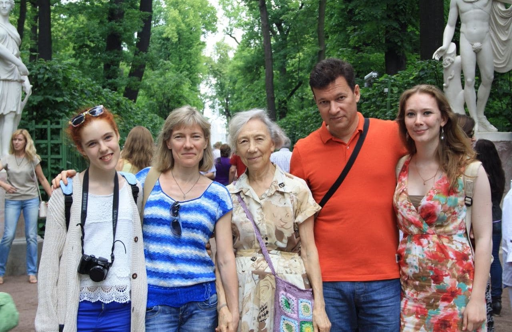
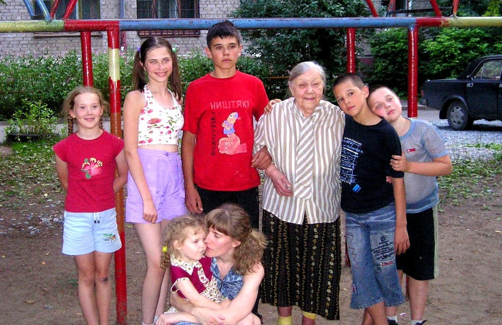
Когда я смотрю на эти фотокарточки, я вспоминаю песню Булата Окуджавы: « Настоящих людей так немного… », которую много лет назад сын прислал мне на День рождения.
На одной я со своими детьми и внучками. На другой моя мама со своими правнуками.
Замечательная песня, но не могу согласиться с автором. В моей жизни много настоящих людей. В первую очередь – мои родители.
И всех, кто на обеих фотографиях, я с полной ответственностью тоже отношу к ним. Даже самую младшенькую из маминых правнуков, что сидит на руках у своей мамы. Даже она сегодня – уже состоявшийся человек. И настоящий – я уверена!
Благодарю вас, дорогие мои! Я горжусь вами!